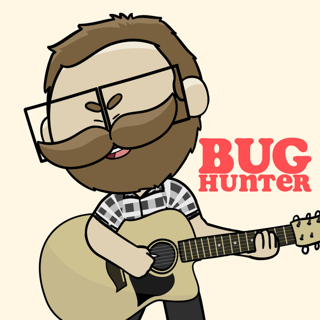
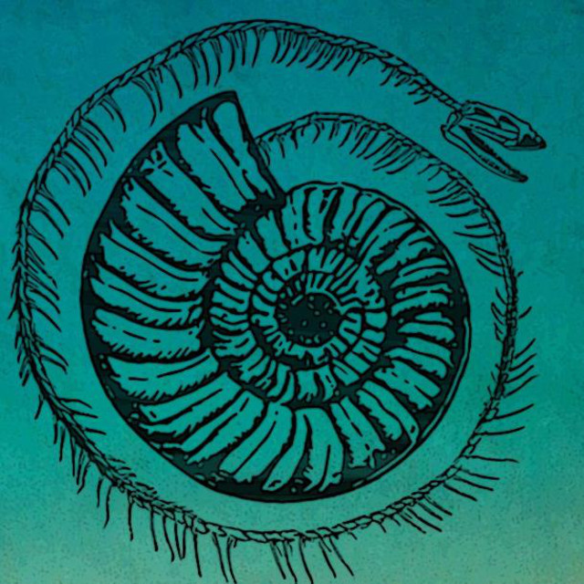
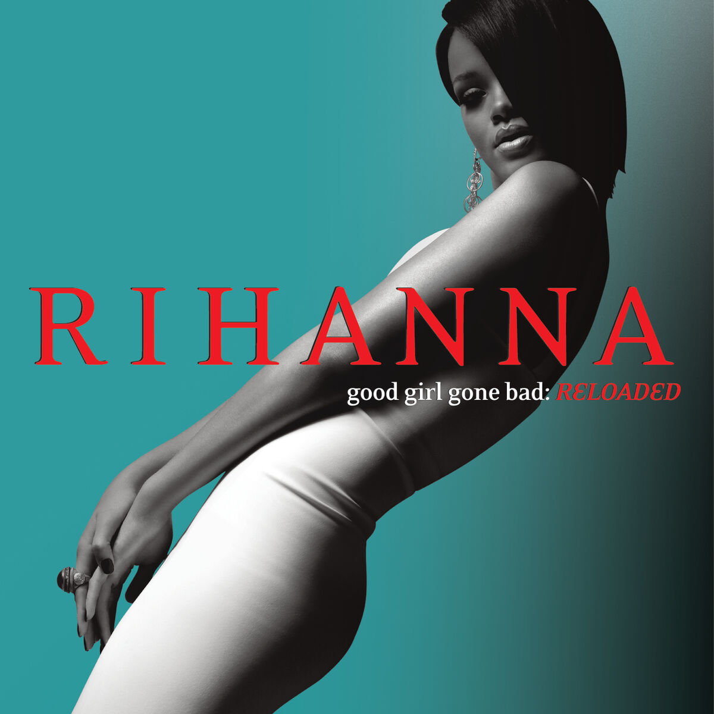
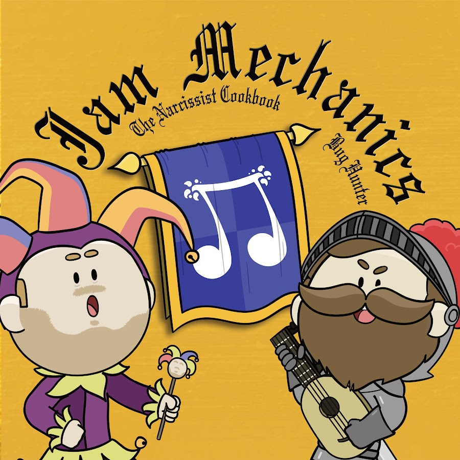
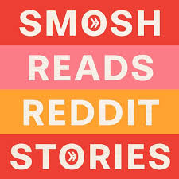
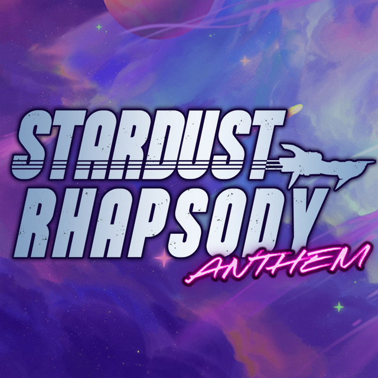

These are images of the audio products I listen to, including album covers, profie art, or their art in general

This is the art from Bug Hunter's profile on spotify. It was drawn by DeepBlueInk, an artist and animator who was a guest prompter on season 2 and the prompter completely for season 3, he can be found on youtube and has a website you can visit. Click the image to go to the Wikipedia of Bug Hunter!

This is the art from The Narcissist Cookbook's profile on spotify. I couldn't find the artist who drew it, but he has previously stated that it was a professional artist. Click the image to go to the everybodywiki of TNC!

This is the album cover for Rihanna's Good Girl Gone Bad: Reloaded. Some of my favorite songs from this album are Shut Up And Drive and Breakin' Dishes. Click the image to go to the Wikipedia of Rihanna!

This is the cover for the most recent season (season 4) of Jam Mechanics. This was also drawn by DeepBlueInk. Click the image to go to their instagram!

This is the cover for the podcast Smosh Reads Reddit Stories. I'm pretty sure this cover was created by themselves. Click this image to go to their spotify!

This is the art and cover art for Legend of Avantris's Stardust Rhapsody: Anthem. I believe this cover was also created by them. Click this image to go to their fandom page!